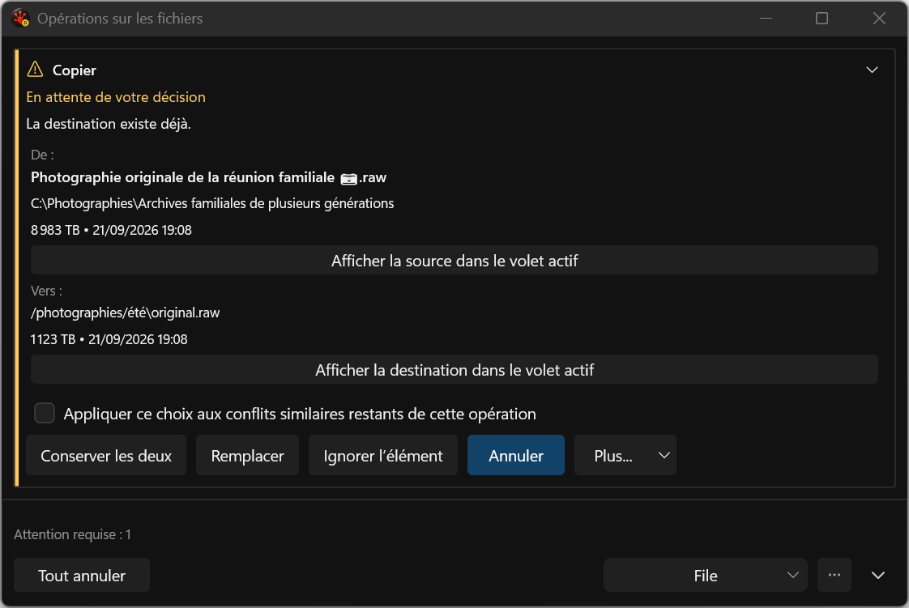
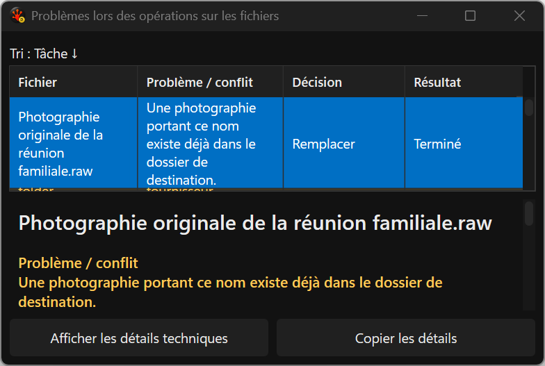
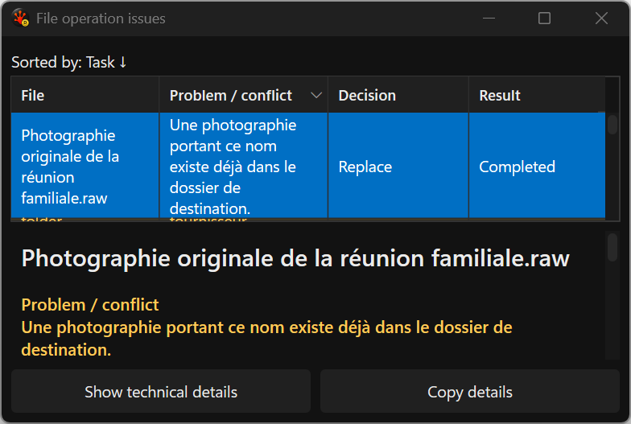

Actual application test-harness captures
Focused x64 Debug cases; results and limitations · source and hash manifest.

Unknown provider: a generic collision question, with the exact path in the destination row.

French Issues title includes pending and resolved conflict observations. The visible lower-row sliver remains a separate open grid-layout gate.

English title after the same-window language change.